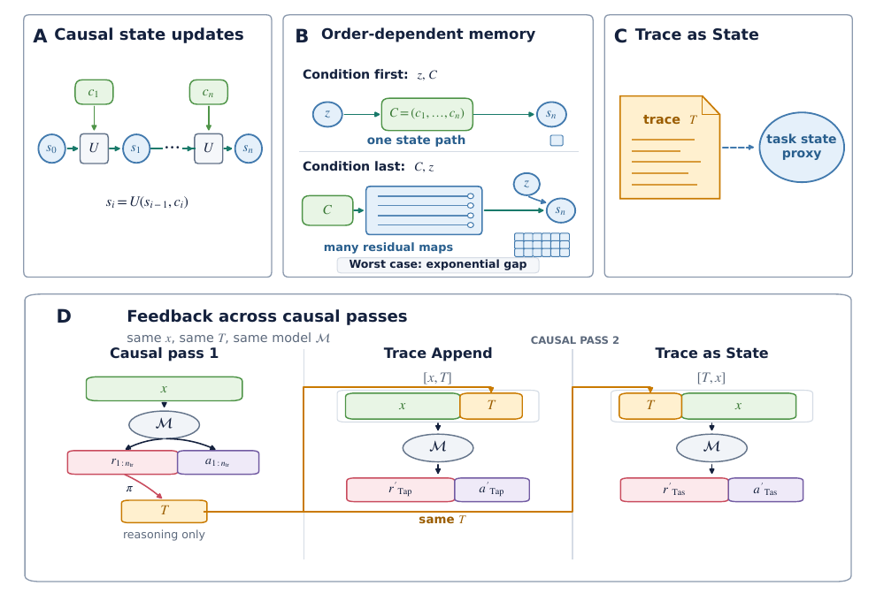
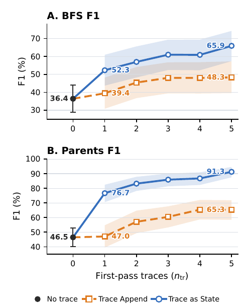

Trace as State: Reasoning Traces as Conditional States for Long-Context Transformers
TL;DR
- "Trace as State" (arXiv 2609.02702; Xu Zou, Jie Tang) is a pure inference trick: run the model once on a long-context problem, collect its reasoning traces, then run a fresh pass with the traces placed before the context —
[T, x, q]instead of the natural append order[x, T, q]. - The placement is the entire method, and it is worth a shocking amount: on GraphWalks-256K Parents, DeepSeek V4 Pro Preview goes from 29.2% EM (first pass) and 43.0% EM (trace appended) to 81.8% EM with Trace as State; GLM-5.2 reaches 100.0. Across 3 frontier models × 3 long-context benchmarks, condition-first wins 26 of 27 model/task/metric combinations.
- The motivation is a clean formal argument: for causal state-update processors, receiving a task condition before an information stream requires \(\lceil b\rceil\) bits of working memory, while receiving it after can require \(\lceil b2^b\rceil\) bits in the worst case — an exponential gap that transformers, as causal processors, plausibly inherit.
Why this matters
Every agent harness that does retry-with-feedback makes a silent design decision: where does the feedback go? The near-universal convention — append the previous attempt's reasoning after the context and ask again — turns out to be measurably the wrong order, by up to ~39 EM points on state-tracking tasks. That is a free, architecture-agnostic win for anything that rereads long inputs: compaction/resume loops, multi-pass document QA, self-refinement, best-of-N with feedback.
The deeper reason this belongs in this tracker: it gives a principled account of why context ordering matters, not just another prompt hack. A causal transformer builds representations of token i using only tokens \(<i\). Task state discovered during reasoning (an active target, a resolved reference, a search frontier) cannot retroactively shape how the 256K tokens before it were encoded — unless you re-present the context with that state up front. This is the same intuition behind putting instructions before documents, and behind PRO-LONG's programmatic memory (externalize evolving task state so it survives long horizons); here it is isolated as a single controlled variable and given a memory-complexity justification.
The core idea
Model a causal processor that reads an ordered sequence of information units \(C=(c_1,\dots,c_n)\) and carries a task state \(s_i\) in a finite state space \(S\), updated by a fixed rule:
where \(s_i\) is the state after unit \(c_i\). In a conditional state-update task, the initial state is a condition \(z \in S\). If the processor gets \([z, C]\) (condition first), it tracks one realized state path and needs only \(\lceil b\rceil\) bits, \(b=\log_2|S|\). If it gets \([C, z]\) (condition last), it must retain enough to answer for any possible condition — a full response profile over \(S\). In the worst case that costs
bits: exponentially more working memory than condition-first. The ordering principle: a task condition is far easier to use when it arrives before the information whose processing it guides.
The bridge to LLMs: a reasoning trace is an observable textual proxy for task state — possibly lossy or wrong, but often carrying exactly the "condition" the model discovered too late on the first pass. So sample \(n_{tr}\) first-pass runs, serialize the traces, and give them to a fresh pass ahead of the context:
where \(x\) is the long context, \(r_j/a_j\) are trace and visible answer of run \(j\), and \(\pi\) is a fixed serializer (source-order traces + delimiters like <trace_start>). Trace Append (Tap) and Trace as State (Tas) use the same \(T\); order is the only difference.

Figure 1 from the paper: (A) causal state updates; (B) condition-last processing needs exponentially more worst-case memory than condition-first; (C) reasoning traces as a textual task-state proxy; (D) the two second-pass orders,[x,T] vs [T,x], with everything else held fixed.
How it works
The evaluated realization is deliberately frozen — no training, no architecture change:
Algorithm: Trace as State (inference-only)
Input: model M, long context x, question q, repeats n_tr
1. First pass: for j = 1..n_tr:
2. (r_j, a_j) ~ M([x, q]) # log the reasoning trace r_j
3. Serialize: T = pi(r_1, ..., r_n_tr)
4. # fixed labels + <trace_start>/<trace_end> delimiters,
5. # traces kept in source order, truncated to 50k chars each
6. Second pass (Trace as State):
7. answer ~ M([T, x, q]) # trace BEFORE context, question last
8. (Control — Trace Append: answer ~ M([x, T, q]))
Return answer
The question \(q\) always goes last in both conditions (models misbehave otherwise), so the literal prompts are \([T,x,q]\) vs \([x,T,q]\).
Setup. Three frontier long-context models with intentionally different architectures — Qwen 3.7 Max (Gated DeltaNet + Gated Attention), DeepSeek V4 Pro Preview (CSA/HCA sparse attention + mHC), GLM-5.2 (1M-token MoE with DeepSeek Sparse Attention) — all run at max reasoning effort through their official providers. Benchmarks: GraphWalks 256K (BFS and Parents subtasks: maintain graph state over a long edge list), MRCRv2 8-needle at 256K/512K (bind a final request to the right earlier instance), and NUB-1M (long-novel comprehension, season 2, 20 problems). Five repeats per problem; all five traces go into \(T\).
Results
The headline table (Table 2, all numbers % over 5 repeats):
- DeepSeek V4 Pro Preview, GraphWalks Parents: 29.2 EM first pass → 43.0 Trace Append → 81.8 Trace as State (F1: 46.5 → 65.3 → 91.3). BFS: 31.6 → 41.8 → 58.8 EM.
- Qwen 3.7 Max, Parents: 60.8 → 71.0 → 96.4 EM. GLM-5.2, Parents: 66.4 → 83.2 → 100.0 EM (and 100.0 F1).
- MRCRv2 and NUB-1M move the same direction everywhere; the single exception in 27 combinations is GLM-5.2 GraphWalks BFS F1 (Trace Append +0.8 higher, while EM still favors Trace as State).
The ablations (Table 3, DeepSeek on GraphWalks 256K) are the persuasive part, because they kill the cheap explanations one by one:
- Re2 (reread: \([x,q,x,q]\)) gets 50.0 EM on Parents — rereading helps, but Trace as State's 81.8 is not just rereading.
- Question First \([q,x,q]\): 53.0 — the question is useful early state, but traces carry more.
- Answer Feedback \([a,x,q]\): 45.4 — answers alone are a much weaker state proxy than reasoning.
- Random Trace \([T_{rand},x,q]\): 14.2, worse than no trace — so it is not a formatting/scaffold effect; the content must be problem-specific.
- Trace Only \([T,q]\) (no context!): 43.8 — traces carry real answer-relevant state, yet rereading the context conditioned on them adds ~40 more points.
- Trace as State (81.8) even beats Oracle@5 (50.0), the best of the five first-pass answers picked retrospectively — the second pass genuinely computes something new rather than selecting.

Figure 2 from the paper: F1 rises with the number of reused first-pass traces \(n_{tr}\), and Trace as State dominates Trace Append at every count — trace count acts as an inference-scaling knob.The trace-count ablation (Figure 2) shows monotone-ish gains from \(n_{tr}=1\) to 5 with the ordering gap persisting throughout, which frames "how many first-pass rollouts to feed back" as a legitimate test-time-scaling parameter.
How it connects
- PRO-LONG: programmatic memory — same conviction (task state must be made explicit and available, not left implicit in attention), different mechanism: PRO-LONG maintains executable state across a horizon; Trace as State re-injects discovered state at the top of a fresh pass.
- Declarative Attention (tracked yesterday, arXiv 2609.02737) is the natural complement: it lets the model choose what to read from a fixed-order cache, while Trace as State changes the order so early reading is already conditioned. One optimizes the read pattern, the other the write pattern.
- Full-Bandwidth Transformer (tracked, arXiv 2608.08888) is the architectural version of the same feedback idea — routing top-layer latent state back to decoding — where TAS does it in text across passes with zero weight changes.
- Prefix Sliding (tracked, arXiv 2608.26070) found that the task prefix plus recent reasoning carries most attention weight; TAS explains a piece of why a prefix is so disproportionately valuable: it conditions everything downstream.
- The authors' proposed extension — jointly learning the model and the feedback interface — is essentially the harness–weight co-training program of WHALE applied to trace placement.
Critical take
The cost story is buried: Trace as State is a second full pass over up to 256K–512K tokens plus five first-pass rollouts, so the fair baseline is not "first pass" but "any method at matched token spend." The paper partially addresses this — Oracle@5 and Re2 are compute-comparable and lose badly on Parents — but a compaction-style baseline (summarize traces, then reread) is missing, and traces are already truncated to 50K chars, which is a crude serializer \(\pi\). The theory is motivation, not proof: the authors are candid that conditional state-update tasks "are not literal models of real world long context tasks," and transformers with KV caches are only loosely finite-state. Benchmark choice flatters the method — GraphWalks/MRCR are nearly pure state-tracking; NUB-1M (the most naturalistic task) is only 20 problems and shows the smallest, noisiest gains (60→73 for DeepSeek but 37→51 for Qwen from a very weak first pass). Also, provider-side output budgets were left at defaults and "may change over time" — an honest but real reproducibility hole. None of this threatens the core finding, which is cheap to verify and immediately actionable: when you feed an agent its own prior reasoning, put it before the context, not after.
If you remember three things
- Same trace, same model, same context — moving the trace from after to before the context is worth up to ~39 EM points (43.0 → 81.8) on long-context state tracking, and wins 26/27 comparisons across three frontier models.
- The formal ordering principle: condition-first costs \(\lceil b\rceil\) bits of working memory, condition-last up to \(\lceil b2^b\rceil\) — late conditions force a causal processor to hedge over every possible state path.
- Random traces hurt (14.2 vs 29.2 baseline EM) while own-problem traces without any context reach 43.8 — the gain is problem-specific state, not scaffolding, and the number of reused traces is a new inference-scaling knob.